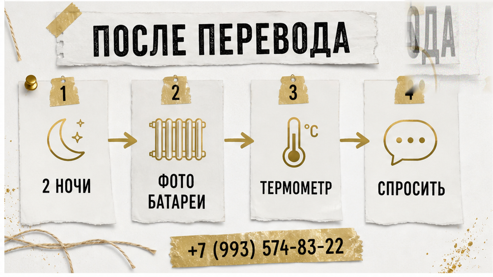
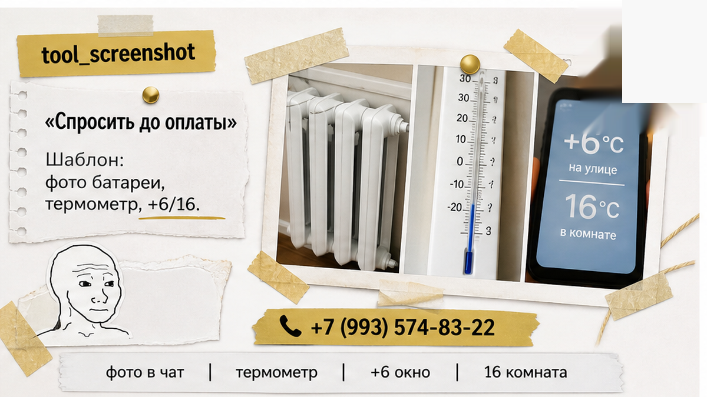
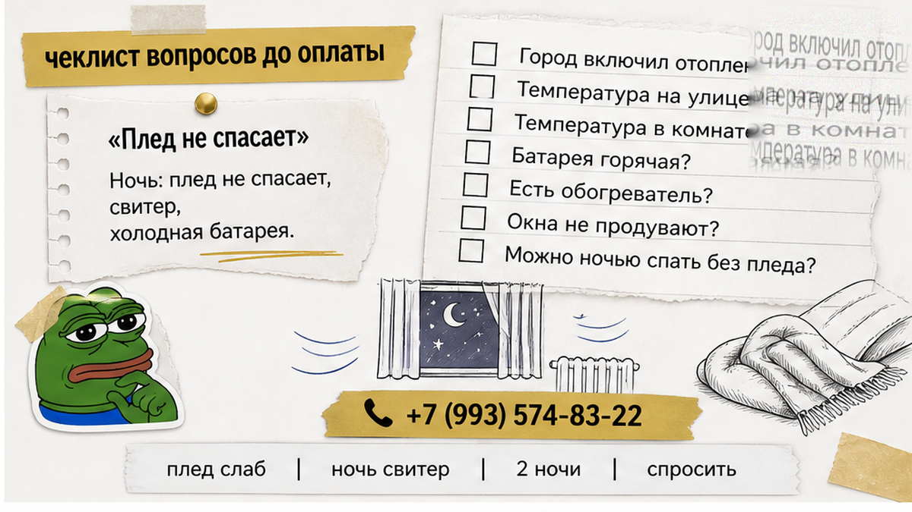

«Тепло есть» — так было написано в карточке, и так же ответил хозяин в чате, когда гость отдельно переспросил про отопление. После этого гость перевёл 6 800 ₽ за две ночи и поехал. Вечером заезда за окном было около +6 °C, в комнате — шестнадцать-семнадцать градусов, а батарея под окном оставалась холодной. Не «ещё прогревается», не «чуть тёплая» — холодная так, что ладонь можно держать на секции сколько угодно. Стояк в ванной такой же. К ночи на стекле выступил конденсат, и стало понятно: плед — не решение, а способ дотерпеть до утра в куртке. Деньги уже ушли, ключ в руке, спать нужно сегодня.
Дальше хозяин написал: «Сезон ещё не начался». Потом: «УК скоро включит». Потом: «Ну возьмите плед, одна ночь». Каждая фраза может быть правдой про дом, город и календарь. Но ни одна не объясняет ночь, которая уже оплачена. Гость платил не за наличие труб в стене. Он платил за возможность лечь и не мёрзнуть.
Я хост посуточной в Тюмени. Это «Добрый дом». Пишу о таких ситуациях в Telegram и MAX — вопросы про квартиру гости задают не в комментариях, а в чате, за десять минут до перевода.
В сентябре эти две фразы легко спутать. «Отопление есть» может означать только то, что в доме установлены радиаторы, проходят стояки и квартира подключена к системе. «Батарея греет» — это уже про конкретную квартиру, конкретный вечер и конкретную ночь. Между этими смыслами как раз и мёрзнет гость.
Городской запуск тепла привязан не к удобству отдельного жильца, а к погоде: когда среднесуточная температура держится ниже +8 °C пять суток подряд, отопление должны подать не позже следующего дня после этого периода. Днём в Тюмени может быть +12…+17 °C, ночью — +3…+8 °C, а среднесуточная температура всё ещё остаётся высокой. Город ждёт. Человек в квартире лежит при шестнадцати градусах и тоже ждёт — только не запуска сезона, а рассвета.

Даже после официального включения тепло приходит не во все квартиры одновременно. В системе бывает воздух, нужна настройка, где-то радиаторы прогреваются позже. Для постоянного жильца «через несколько дней наладят» — неприятность. Для гостя, который приехал на две ночи и уезжает послезавтра, это значит: в его поездке тепла, возможно, не будет вообще.
Поэтому описание без проверки ничего не гарантирует. Ровно как «тихий центр», который к утру оказывается краном под окном: слово в объявлении может быть написано без намерения обмануть, но вечер от этого не становится другим.
Сначала гость обычно фотографирует батарею и пишет хозяину: «В комнате 16–17 градусов, батарея и стояк холодные, окно потеет». Лучше добавить короткое видео, где видна рука на секции, и показания термометра. Текст важнее звонка: он остаётся в переписке, а устный разговор потом каждый помнит по-своему.
Дальше нужен не спор, а конкретный вопрос: что хозяин делает сегодня вечером? Вариантов немного — привозит свой обогреватель, переселяет в другую квартиру, возвращает деньги за ночь или её часть. Ответ «сезон не начался» объясняет причину, но не решает проблему.
С обогревателем тоже нельзя перекладывать всё на гостя. Самостоятельно покупать тепловую пушку и включать её в чужую розетку рискованно: проводка и автоматы не ваши. Если хозяин предлагает купить любой прибор, попросите подтвердить это в чате. Одна строка в переписке полезнее, чем последующий разговор о перегруженной линии и сгоревшем удлинителе.
А если хозяин замолчал, остаются сохранённая переписка, фото, видео и обращение в поддержку площадки. Звонить в управляющую компанию вместо него бессмысленно: у гостя нет договора и лицевого счёта, а заявку обычно подаёт собственник. Воздушные пробки, запуск системы и разговор с УК — работа хоста, не человека, который приехал на две ночи.
Вы спрашиваете про батареи до перевода — или тоже верите строчке «тепло есть»? Напишите в Telegram или MAX. Мне важно понимать, в какой момент гости замечают эту разницу: до оплаты или уже с ключом в руке.
Описание квартиры пишется один раз, а сентябрь каждый год приходит с другой температурой. В карточке остаётся «отопление есть», хозяин имеет в виду подключённый дом, гость читает это как обещание тёплой комнаты. Расхождение вскрывается вечером заезда — именно тогда, когда менять планы, искать другую квартиру и возвращать деньги уже сложнее.

Механика знакомая: «кухня есть», после которой три ночи ужинают в кафе, или «всё включено», за которое потом доплачивают отдельно. Слово в объявлении описывает наличие. Гостю же нужен результат: можно ли приготовить еду, не придётся ли доплачивать, будет ли тепло именно сегодня.

В сентябре отопление кажется таким же само собой разумеющимся, как стены и окна. В январе про него спрашивают все, а в начале осени — почти никто. Поэтому и возникает эта ловушка: человек сравнивает цену, район и фотографии, а потом выясняет, что самое важное для ночи осталось за пределами переписки.
Ответ про тепло должен быть конкретным: батареи в этой квартире греют сегодня вечером или нет? Если сезон ещё не начался — что находится внутри вместо центрального отопления и кто включит это до приезда? Обещать тёплую ночь, не проверив радиатор в тот же день, — Нет. Так не заселяем. Даже если гость торопится и готов перевести деньги прямо сейчас.
Вопрос-отмычка перед переводом простой: «Батареи уже греют в этой квартире сегодня вечером или отопление только после старта сезона?» Нормальный ответ звучит так же конкретно: «Греют, сезон дали в среду» или «Ещё нет, но в квартире два конвектора, включу до вашего приезда». Уклончивое «там всё есть, не переживайте» тоже является ответом. Только отрицательным.
Сначала проверка. Потом перевод. Не наоборот.
Проверяется не формулировка, а вещь. Как в истории про «всё для гостей» и один мокрый коврик в ванной: красивое обещание не согревает и не вытирает пол. Если никто не приложил ладонь к батарее, гость платит не за тепло, а за надежду, что оно будет.
Хотите заселиться без этой лотереи — спросите нас про батареи заранее. Отвечаем конкретно:
Telegram: https://t.me/Dobriy_dom_72
MAX: https://max.ru/id660300569233_biz
Бронирование: https://добрыйдом-72.рф/booking/
Сайт: https://добрыйдом-72.рф/
Телефон: +7 (993) 574-83-22
Менеджер: https://t.me/Dobriy_dom_Tyumen